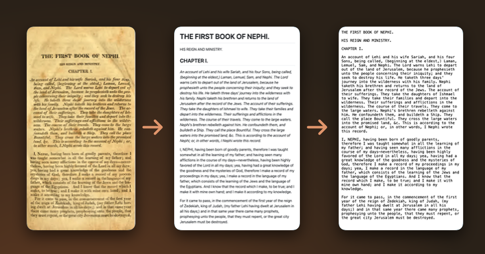

1830
The Book of Mormon
Grandin · Palmyra
- book-of-mormon-1830-pages/
- book-of-mormon-1830.md
- book-of-mormon-1830.txt
- book-of-mormon-1830-sparse.txt
- printer-typos.md
Original texts from the history of The Church of Jesus Christ of Latter-day Saints, transcribed page by page with AI into clean, open formats that are readable by people, databases, and AI alike. Featuring five early editions of The Book of Mormon (1830–1852), plus the 1833 Book of Commandments and the 1828 Phinney Bible.

Transcribing images of original documents into text makes them searchable, quotable, and ready for use with modern tools.
Markdown converts readily to HTML, PDF, Word, EPUB, images, or JSON.
AI is especially good at reading and analyzing Markdown, so these texts are immediately usable in AI workflows.
Plain text works on any system and imports cleanly into databases and analysis tools.
Each edition lives in its own repository, with page-by-page transcriptions, combined files, the generated tools, and all AI documentation. More texts will be added over time.
Grandin · Palmyra
Pratt & Goodson · Kirtland
Robinson & Smith · Nauvoo
Young, Kimball & Pratt · Liverpool
Richards · Liverpool
Every page is examined closely, then checked independently.
AI analyzes each page image, using code and image tools to zoom in and out on words, letters, and punctuation. Each page becomes its own Markdown file, with comments noting page features and uncertain readings.
Results are compared with OCR extractions of the same text to catch discrepancies.
A separate agent proofreads each file blindly against the original image, flagging discrepancies and ambiguities.
Project tooling: Claude Code by Anthropic, with the Sonnet 5.5 model at Medium effort. All generated Python tools and AI documentation are included in each text's repository.
Once the per-page Markdown files exist, code generates these outputs for each text.
.md file..txt file.-sparse.txt).printer-typos.md).Markdown is a simple way of writing formatted text using plain characters, such as # for headings and *asterisks* for italics. A Markdown file is still readable as ordinary text, and can also be displayed with formatting.